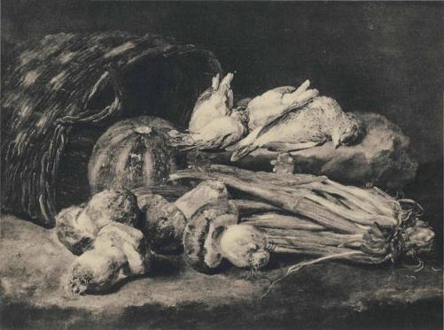
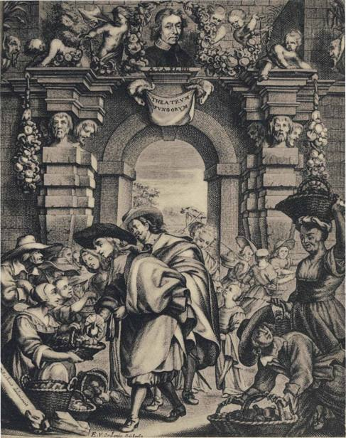
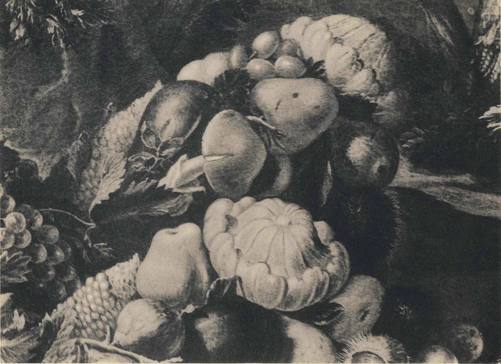

1 he French word potiron means 'pumpkin'. In the West of France and as far
south as the Garonne it also means any large mushroom. The word presents
what is perhaps the prettiest problem in the whole fungal vocabulary of Eu-
rope. No one has hitherto determined its origin. Littre originally quoted Gilles
Menage's suggestion of a word found in the writings of the Arabic thinker
Avicenna - alphotie. Later in his Supplement he added Marcel Devic's alternative
Arabic source, the word futr meaning 'mushroom'. Oscar Bloch in his turn
favored the Syrinc pdturtd, which he said meant 'morel'. These bizarre suggestions
with their curious bias for the Near East offer no explanation for potiron in the
sense of 'pumpkin'. They only illustrate how even philologists, when at a loss,
give recognition to the flimsiest guesses. The Arabic and the Syriac words are
etymologically identical, based on a Semitic root meaning 'to split' or 'to cleave'.
In Latin cucutna means a kettle, cucumis a cucumber, and cucurbita a gourd.
Among primitive communities living in the climatic zone where gourds
nourish, these have always served for cooking fluid food and boiling water.
This primitive practice must still have been alive in the minds of the ancient
Romans when they used words for kettles and gourds that closely resembled
each other, and we think that potiron is a translation (pot meaning 'kettle')
of the Latin words, preserving for us the semantic link that was obvious in
Latin. But this does not explain the use of potiron for 'mushroom'.
The pumpkin-mushroom link is not confined to potiron. We discover it in
Provenfal, where coucourlo means both the common field mushroom and
the pumpkin. The Italian cocomero means 'pumpkin' but not mushroom;
the Provencal cougoumello is the name of certain mushrooms, but does not
mean pumpkin. The general word for all mushrooms in Portuguese is cogumelo;
it is not, however, linked with any gourd. We seem to be in the presence here
of a variety of words derived from one or the other of the Latin cucuma, cucumis,
and cucurbita. But why are mushrooms found in this company?
All words such as these, which live out their lives for the most part in oral
usage, lend themselves to popular contamination with other words. Some
mushrooms when they first break the soil look like eggs, and this is why the
amanita caesarea is called in standard Italian the ovolo and the amanita muscaria
the ovolaccio. The French word coque means 'eggshell' and there are colloquial
words in Italian, cocco and cucco, meaning 'egg'. In standard Italian cocco is some-
times used as another name for the amanita csesarea, and this word takes various
local forms in the North: in Piedmont cocon or coc or cucon; in Lombardy,
jung cocch; in Venice, the boleo coco or coco bon; in Genoa, the cucun. (Our English
'cocoon' belongs to the same family.) The names of the amanita muscaria in
northern Italy bear the same stamp: cocch fals or cocch velenos, or cocch bastard in
Milan. The lepiota procera is the coccomelle or cuccamele in Piedmont; in France
this species is called in some regions the coulemelle and in others the potiron.
It would appear that all of these names stem ultimately from the Latin word for
kettle, but have been influenced in their shape by words for eggs or egg-shells.
But all this still leaves unexplained why, in the first place, pumpkins and
mushrooms got mixed up together.
Another word for 'pumpkin' in French is pepon, for which Frederic Godefroy
gives the following early variants: popon, poupon, pompon, ponpon. 'Pumpkin'
in English is a popular form of the Middle English 'pumpion', which in turn
comes from the French word that we are now discussing. For the sake of our
argument and in advance of our supporting evidence, let us assume that the
French word pepon originally carried two meanings, 'pumpkin' and 'mushroom'.
It has retained only one in French, and bequeathed only that one to English.
But in Basque papun and panpun mean 'mushroom', and could represent the
lost meaning of pepon. The French philologists have been baffled by the word
pompon, which is the English 'pompom', since its semantic tie with gourds
is not clear. But the difficulty is solved if the old French word also meant 'mush-
room', for what is a pompon but a 'mushroom'?1
This hypothesis, supported so far by only two strands of circumstantial evi-
dence, still does not tell us why gourds were linked with mushrooms.
This link is deep-seated, but we believe we can put our finger on it.
At the outset let us examine the word potiron more closely, and especially
its use in the i6th century.
In the sense of 'mushroom' potiron was in use at least as far back as the I5th
century, according to Albert Dauzat. This is the older meaning, antedating the
discovery of America. Potiron as a designation for gourds is confined to squashes
and pumpkins, and they are of New World provenience. In the i6th century
these vegetables were called courges d'Inde and courges d'outre-mer, but potiron began
I. In the United States and Canada, the ordinary woodsman's word for any shelf fungus is 'conk', and because
of the shape of the growth, the word is supposed to come from 'conch'. But woodsmen do not know the molluscs
and are unlikely to turn to them for metaphors. The Dictionary of American English gives grounds for supposing
that 'conk' is a shortened form of'conkus' or 'konkus'. In the English counties from Lincolnshire to the Scottish
border there has long been a word used for cucumbers: 'congers', 'cungers', and'conkers'. Is the American word
for the fungus cognate with the name for the cucumber, and do we find here another example of the association
of fungi with gourds? In the absence of a bettter etymology, we offer this as a conjecture, to be tested by
further inquiry.
128

PLATE xxiv. Jan Fyt. Still life. Brussels, Musees Royaux des Beaux-Arts de Belgique.
PLATE xxv. Jan Davidsz. de Heem. Still life. London, Wallace Collection.

PLATE xxvi. Adriaen van Utrecht. Still life. Brussels, Musees Royaux des Beaux-Arts de Belgique.

PLATE xxvu. Frontispiece to Franciscus van Sterbeeck's Theatrum Fungorum, Antwerp, 1675.
THE GOURD CLUSTER
to supersede those nonce names in the iyth century. If there was a metaphorical
transfer, we must conclude that the New World squash suggested a mushroom
to the French and was therefore called a mushroom. This explanation seems to
have satisfied the philologists Albert Dauzat and Oscar Bloch, but it leaves
us sceptical. To be fair we must point out that there is one small squash with
scalloped edges that in color and even in external texture might suggest certain
mushrooms. This is the kind of squash, a variety of cucurbita pepo, known
formerly as the simlin or cymling and today as the patty pan squash or white
bush scallop. A further circumstance might support the philologists' position. The
French were discovering how to cultivate the champignon de couche at the very
moment when they were learning to cultivate the squash, in the first half of
the iyth century, and there is reason to believe that the manured hills of the
squash-patch served simultaneously as mushroom beds. For centuries the country
folk of some parts of western Europe had been encouraging the growth of
various kinds of edible fungi by bringing about the conditions under which
they might spontaneously appear. In the iyth century it was known in France
that parings of the psalliota campestris rejected in the kitchen could be thrown
on horse manure with a reasonable expectation that they would produce a
crop of mushrooms in the warm fermenting dung.1 As we have mentioned
before on page 6, N. de Bonnefons described this practice for the first time
in print in his Le Jardinier fran^ois in 1651, and he added the significant advice
that the beds prepared for melons could serve this double purpose. In our
mind's eye we can see the mushrooms growing in the same beds or hills with
melons, pumpkins, and other gourds, and this was taking place at the very
moment when potiron, an old word for 'mushroom', was beginning to be used
as the name for certain exotic gourds, lately introduced from overseas. It was
therefore not unnatural for farmers to associate mushrooms with gourds. Further-
more, the readiness of both squashes and mushrooms to putrefy rather soon
into a watery mess2 might have suggested a kinship that expressed itself in the
1. The use of fungal 'spawn' came later, as did the discovery that mushrooms lent themselves to cultivation in
caves and cellars. But there is a baffling sentence in the Satyricon of Petronius Arbiter, written in the first century:
Ecce intra hos dies scripsit, ut illi ex India semen boletorum mitteretur. [Loeb Library, p. 59] Within a
few days, I may say, he has written for a cargo of mushroom seed from India. If boletus here carries its usual
meaning of the Caesar's amanita, it indicates a mastery in the cultivation of these delectable mushrooms wholly
unknown today and never elsewhere mentioned in surviving records of ancient times.
2. Shakespere uses 'squash' on several occasions. Thus in Act. m, Sc. i of A Midsummer Night's Dream Bottom is
asking the names of various characters and from one learns that he is Pease Blossom, whereupon Bottom retorts:
I pray you commend me to Mistress Squash your mother
and to Master Peascod your father.
'Squash' as a name for the American gourd is derived from a Narragansett Indian word, and Shakespere could
not have known the word and probably did not know the gourd. 'Squash' in the sense of'squeeze' is European
129
use of the same name for both, a similarity in putrefaction that Sir Thomas
Elyot pointed out in 1541 in the words that we quoted on page 19. All in all,
the evidence assembled in this paragraph would seem to offer an explanation
for the dual use of potiron.
But let us not forget the suggestion inherent in the older forms of the word
pepon indicating that the association of gourds and mushrooms long antedated
the 16th century and the cultivation of the field mushroom.
J_ here is a source of promising evidence relevant to our theme of surprising and
fascinating quality in the still-life paintings of the Low Countries in the iyth
century. This was the epoch when the Flemish and Dutch schools were produc-
ing innumerable canvases representing the foods of the times - fish, game, meats,
vegetables, fruits. The number of accomplished artists who devoted their talents
to paintings of food is astonishing, and apparently they never tired of their
theme. We have combed these still-lifes for mushrooms, and while of necessity
we cover only a small part of the source materials, it is clear that paintings of
food with mushrooms are exceedingly rare. We have found only four, of which
not one is Dutch. All four are Flemish, or from the Catholic side of the religious
line that bisected then as now the Low Countries. On a later page we shall revert
to the significant absence of fungi as food from paintings of the Dutch school.
Of the four paintings we reproduce one by Jan Fy t, and details from a canvas
by Jan Davidsz. de Heem and from one by Adriaen van Utrecht. All three of
these painters were in the plenitude of their powers at the precise time when
N. de Bonnefons was composing his book on gardening and describing for
the first time the preparation of mushroom beds. A fourth painting, attributed
to the Antwerp artist Frans Snyders, shows a young market woman surrounded
by baskets of divers vegetables and fruits with one basket of ceps; it hangs
in the art gallery at Schloss Pommersfelden, Germany. Snyders was a slightly
older contemporary of the other three. Of this painting a iyth century variant
is in the Louvre. All four artists worked in Antwerp or Brussels.
The startling feature of the three paintings that we reproduce is that in all
three we find a. potiron or squash, and in two the potiron is juxtaposed to mush-
rooms. In the light of the dual meaning of potiron, this juxtaposition justifies
a conjecture that it was not accidental. Thanks to the gracious help of Dr. Hugh
in origin, and specifically it meant for Shakespere an unripe pea pod or 'peascod'. The pea pod played a familiar
role in amatory folklore in Shakespere's day, and 'peascod' was heavily charged with genito-urinary puns and
symbols; cf. 'cod', 'codpiece', etc. Mistress 'Squash' invokes a parallel female metaphor equivalent to Shakespere's
erotic use of 'medlar' in Romeo and Juliet and elsewhere. Though 'cod', as we have seen, sometimes meant
'puffbair, in Bottom's words there is no link with the fungal world or gourds.
130
THE GOURD CLUSTER
C. Cutler, Assistant Director of the Missouri Botanical Garden, St. Louis,
we can identify the squashes, and he points out that they are the only veget-
ables of New World provenience in these paintings. In the Van Utrecht the
squash is the cucurbita moschata, and belongs to the variety now called Dickin-
son Field pumpkin, familiar in the American Southwest and in central and
southern Mexico. The squash in the Fyt is probably a cucurbita moschata but
might be a pumpkin, i.e., cucurbita pepo. In Heem's painting we clearly find the
pumpkin. Both squashes and pumpkins may be called potirons in modern French.
As for the mushrooms, Snyders, Fyt, and Heem give us ceps; Van Utrecht
offers us ceps and three apparently gilled mushrooms. If as we believe these
latter are very ripe champignons or roses, they are the earliest known representa-
tion of the common mushroom by an accomplished artist.
The mute testimony of these paintings is of extraordinary interest. It might
seem probable that in the painters' minds the squash and mushrooms had an
affinity for each other, and the squashes in question were certainly of American
origin. At the same time the mushrooms painted by them as food were
chiefly boleti, and boleti never grew in a pumpkin patch. Clearly the champi-
gnon de couche played little or no role in the market places of Flanders and
Brabant, and the affinity of mushrooms with the squash was unrelated to the
mushroom beds described by Bonnefons. The cucurbitaceae painted by the
Flemish artists did not include the patty pan squash, with its superficial resem-
blance to a mushroom. Potiron in the sense of'mushroom' has never been known
in the Walloon dialect of French.
The key to the four Flemish paintings is to be found in Franciscus van Ster-
beeck's Theatrum Fungorum, published in Antwerp in 1675, the earliest book
dealing solely with mushrooms. The author never refers to the still-life painters,
who were his older contemporaries, but he divulges a precious item of ethno-
mycological lore. He informs us that the Flemings were mycophobes until
the beginning of the iyth century, at which time certain Italian merchants
came to take up residence in Flanders, and by their example they showed that
mushrooms could be eaten. They launched a vogue for this novel victual, gather-
ing mushrooms themselves, importing dried ones from Italy and Burgundy,
and teaching all and sundry how to distinguish the many good kinds from the
bad. In fact, Van Sterbeeck's treatise is itself a tribute to this budding myco-
philia, written by an enthusiast to spread the good tidings, the first of hundreds
of such missionary efforts brought out in the mycophobic North in the past
three centuries. As there was no Flemish word to designate mushrooms
suitable for the dining room, the Flemings had lately borrowed kampernoeljes
131
from, the French dialect spoken in nearby Picardy,1 and applied it to all the edible
kinds, especially ceps. Afterwards it gave way to champignons. We reproduce the
frontispiece of Van Sterbeeck's work, with its quaint commentary on early
mycophagy among the Flemings. The author portrays himself in a bust at the top
of the architectural design, helpfully telling us that his age was 44. On one side
of him are effigies of happy infants nourished doubtless on the wholesome fungi;
on the other side the corresponding amori are in acute distress from the other
kind. Below we see two gentlemen responding to aggressive selling tactics of the
mushroom vendors. We suspect that the vendors on the right are ready to sell
the evil wares descending from the wretched infants above.
For Van Sterbeeck, for Jan Fyt and his colleagues, mushrooms were a novelty
like the squashes from the New World. This must have been one reason for
juxtaposing them. Just as the Italians brought mycophagy to Flanders, so they
may have been addicted to the new-fangled gourds. Indeed, Italian artists may
have suggested to the Flemings the very theme for the paintings that we are
discussing. Already in the i6th century the Italian painter Giuseppe Arcimboldo
was giving eloquent expression to the same idea.
Arcimboldo was born in 1527 and died in 1593. He delighted in allegorical
figures representing the Seasons, the Four Elements, and the cardinal points
of the compass, which he would contrive to represent by an ingenious ar-
rangement of fruits, vegetables, meats, animals, fishes, or utensils, his selection
harmonizing with his allegory. We reproduce one of his paintings, a reclining
figure that embodies the spirit of Autumn. Until a few years ago it belonged
to a parish church near Brescia, and it now hangs in the Pinacoteca of that city,
not far from Milan. However deficient Arcimboldo was in intellectual and
emotional depth, he was an accomplished craftsman, and this painting constitutes
a document of singular value for the ethno-botanist. Most of the vegetables and
fruits are of Mediterranean provenience, including the medlars of which no
fewer than four are present. The egg plant had been lately introduced into Italy
from the East. The tuberoses in the figure's hair, the squashes, and the maize
come from America, the first two from Mexico. The maize is of a Mexican
variety also, though it could come from further south.
Our painting is undated, but perhaps we can fix with reasonable certainty the
period of its execution. From 1562 to 1587 Arcimboldo lived in Central Europe,
except for a visit to Milan in 1566. Both by its traditional location and by the
artist's choice of vegetables and fruits, it is clear that the painting was done in
I. The use in the Low Countries of kampernoeljes dates back at least to 1567, for we find it cited in Hadrianus
Junius' Nomendator published in that year.
132
PLATES XXVIII, XXIX

PLATE xxvui. Giuseppe Arcimboldo. Autumn. Brescia, Pinacoteca.

PLATE xxix. Giuseppe Arcimboldo. Autumn: Detail. Brescia, Pinacoteca.
THE GOURD CLUSTER
Italy. From what we know about the arrival in Italy of the exotic plants that we
find in the painting, it is far more likely that the artist worked on it after 1587
than before 1562. This means that it was a product of his last years, between
1587 and his death in 1593. These were the very years when potatoes were be-
coming known in northern Italy, and their absence from our painting favors an
early date within these permissible limits. For the past half century ethno-bota-
nists and cultural historians have been studying the impact on the Old World
of the plants discovered in the New, especially tobacco, potatoes, and maize.
To document the first phases of these profound innovations they have combed
the writings of the explorers and historians, and searched through the i6th
century herbals. The herbalist Leonhard Fuchs in his De Historia Stirpium,
published in 1542, was the first to offer his readers a picture of maize, a woodcut.
Thereafter such woodcuts appeared in almost all herbals, often copied not from
life but from a preceding herbal, and often deficient botanically. For workers in
this field the i6th century still-life painters offer an additional source of evidence
that seems to have been ignored. We do not know whether our Autumn by
Arcimboldo is the earliest still-life with maize, but we submit that his painting
of it is incomparably superior to any pictures of maize that have hitherto been
pointed out from the i6th and even I7th centuries. The artist's eye was truer
than the herbalist's, his technique superior to the woodcutter's.1
Our own interest in the Arcimboldo lies in his mushrooms. Mycophiles will
be delighted with the clavaria that serves the recumbent Autumn for beard and
mustachios. In the middle of the left thigh is an ovolo or Caesar's amanita. These
are the earliest mushrooms known to us that we can say are well painted, and
their like was not to be seen again for a full half century. We now draw our
reader's attention to the proximity of the squash to the ovolo, and that squash
happens to be the very one that, on an earlier page, we likened in texture and
shape to mushrooms. It is the squash of American provenience variously called
the cymling, the patty pan, and the white bush scallop. What urge prompted
the artist to place mushroom and squash together ? The scallop was an exotic, but
in Italy the edible mushroom was not. Must we fall back on an accidental
juxtaposition as our only resort; Or do we discover here an expression, possibly
I. For data about Arcimboldo's life we have relied on Benno Geiger's monograph, Dipinti ghiribizzosi di
Giuseppe Arcimboldo, Florence, 1954. Plates 47, 52, 54, and 69 contain mushrooms. One of these hangs in the
John and Mable Ringling Museum of Art, Sarasota, Florida, and another of them is the one we reproduce.
A painting by Arcimboldo that closely parallels the one in Brescia is owned by Edward James, Esq., of Chich-
ester, England, who has kindly furnished us with photographs of it. (Geiger mentions but does not reproduce this
work.) In this variant the clavaria plays the same role. Instead of an ovolo in the thigh, we discover two ovoli,
each constituting a cheek of the recumbent god. For the early history of maize in Europe we turned to John J.
Finan's study, 'Maize in the Great Herbals', published in 1948 in the Annals of the Missouri Botanical Garden,
pp. 149-191.
133
only half conscious on the artist's part, of an ancient association of ideas, such
as we adumbrated earlier and will shortly pursue further? But before we revert
to that theme, we shall conclude our discussion of the mushroom-gourd link
in iyth century paintings by briefly mentioning another aspect under which
mushrooms and gourds were viewed together, the aspect that led Sir Thomas
Elyot in 1541 to warn the readers of his Castel ofHelth to beware of'musherons,
. . . gourds, and al other thinges, whiche wyll sone putrefie'.
A favorite theme of some iyth century still-life painters in the Low Coun-
tries was the transitory nature of all living things, the vanity of this world as
contrasted with the eternal values of the next. In a private collection known to
us there is a painting by Cornelis de Heem, son of Jan Davidsz. and identified
with the Dutch school, in which this vanitas vanitatis chord finds graceful ex-
pression. A shaft of light penetrates from an aperture above to a sepulchral
setting where a lovely flower arrangement is juxtaposed to a bisected gourd
and some growing mushrooms. Unfortunately we have been denied permis-
sion to reproduce this extraordinary canvas. The mushrooms are in a shadow
and scarcely lend themselves to identification. They are not pictured as food,
but instead as the symbol of decay and death. From the glory of the flowers
in their beauty the eye passes to the doomed segment of the disintegrating
melon and on to the fungal expression of the grave. In this painting putrefaction
and death are the meanings that underlie both gourd and mushroom.
If we are right, there emerged in the iyth century new reasons for associat-
ing mushrooms and gourds. But the association in men's minds was far older.
Some indications of this older tradition seem to emerge in the ancient writers.
Take for example the work known in English as Etymologies composed by
St. Isidore of Seville around A.D. 600. He has occasion to list the vegetables
with all their names. Is it by chance that immediately after the cucumbers (cu-
cumeres) and gourds (cucurbitce) he adds the fungi and tubera or truffles;1 Athenaeus
in the second book of The Deipnosophists also discusses numerous vegetable
foods, and what is our surprise to discover that here also the comments on the
mushrooms and truffles follow hard upon the paragraphs dealing with the
gourds! It is a commonplace of reference works that the order of the alphabet
constantly juxtaposes disparate words and ideas, but the alphabet offers us no
explanation for the sequence of vegetables that we find in St. Isidore and
Athenaeus. Pliny is yet another witness to the tie that binds mushrooms to
gourds. In
i. See J. P. Migne, Patrologia Cursus Cotnpletus, vol. 82, column 637.
134
THE GOURD CLUSTER
a sentence in his Historia Naturalis hitherto unremarked by commentators and
ignored by the editors of Liddell & Scott's Greek lexicon, he tells us, in Book
XX, in the chapter that discusses the gourd (cucurbita), about a wild gour/1,
hollow, on which he says the Greeks have bestowed the name spongos, a gourd
growing only on stony soil, of which the walls are of the thickness of a finger,
which when chewed yields a juice wholesome for the stomach.1 Here then in
ancient times is a wild gourd that shares with sponges and mushrooms a name
belonging to the cluster of basic words for the fungal tribe. The dual function
of potiron in the ryth century was a revival and not an innovation, and we
believe that in the root of the Latin word pepo we shall find mushrooms and
gourds conjoined.
1 hroughout the Slavic lands there is a distinctive name for the common field
mushroom. It takes various forms, but in the Ukraine it is pecheritza, andpecharka
may be taken as a typical variant in other Slavic countries. The uniformity
of this name throughout the Slavic world and its invariable application to the
common field mushroom are remarkable evidences of its antiquity: it must
antedate the dispersion of the Slavs and the differentiation in Slavic languages.
The Lithuanians do not use the word, nor do the Germanic peoples; but the
Jews of Eastern Europe have adopted it in Yiddish, and refer to a girl dressed
up 'like a pecheritza', as an American might say, 'like a Christmas tree'. With
a transposition of consonants, the word has been taken into both Rumanian,
ciuperca, and Magyar, csoporke. Its derivation has never been clear. Some have
suggested that it came frompechora, meaning a cave, since the psalliota campestris
lends itself to cultivation in cellars and caves. But this is unacceptable, for
the wild field mushroom does not grow in caves and its artificial cultivation
began in France only after the year 1700. Others have suggested a derivation
from peek', meaning oven, and gone on to assume that the pecheritza was nor-
mally roasted. This is hardly satisfying, for the field mushroom lends itself
to roasting no better than other kinds, and furthermore in the whole rich
mushroom vocabulary of Europe there is no other name derived from a method
of culinary preparation.
But let us take another look at that Slavic word peek', 'oven'. It is cognate
with the Greek itsztov, the Latin pepo, whence through the French pepon to
the English 'pumpion'. These are ah1 of ancient and well attested lineage, com-
i. Many editions of Pliny give somphos instead of spongos as the name of this wild gourd. For our purpose the
difference in words is unimportant, since they are cognate. According to the footnote of L. Desfontaines com-
menting on this textual question (Paris, 1829, vol. 6 of an edition with commentary by various hands, Bk. XX,
Chap, vii [iii]), all Pliny rnss. carry spongos.
135
ing down to us from an Indo-European root that the French philologists Ernout
and Meillet reconstruct as pekwo, which became kwekwo in the Italian peninsula
and in Celtic. The Latin coquo, meaning to cook, and all its kin and progeny are
of this family. Whether cucuma and cucumis belong here, we do not know, but
even if they do not, a semantic blend is possible, for cookery is the common
denominator of them all. Baking and roasting and cooking are the ideas that
underlie the root. That which is baked rises, expands, swells, grows brown
and ripe and mature. It is therefore not surprising to discover that from the
earliest times the word carried a second related meaning, the idea of 'ripening
in the sun'. As Ernout and Meillet say, "La notion de 'maturite' est liee a la
racine depuis 1'indo-europeen." Whence the application to gourds, and - we
submit - to that species of mushroom, the psalliota campestris, which comes to
maturity in the open fields under the sun. Pumpkins and these mushrooms
swell and ripen in the sun. The Provencal concourlo, meaning both field mush-
room and pumpkin, is a breath-taking word, for in its specific application to
the field mushroom we witness the toughness of a semantic theme running
through long stretches of time and space.
If our argument prove sound, we have established from evidence gathered
in Eastern Europe the explanation for the link between mushrooms and gourds
that crops out in the French potiron and in the Provencal coucourlo.]ust as we have
earlier established what we call apogge cluster of mushroom words, and a sponge
cluster, so now we discover the existence of a gourd cluster. All three appear
to go back to Indo-European roots that resemble each other and that convey
the same innermost idea of a growth or swelling. But only the first of these
clusters directly involves the frogs and toads. In the French word potiron, wherein
mushrooms are called pots, metaphorically speaking, the attentive mind catches
a recurrence of the semantic theme that we found in the Indo-Aryan languages,
where a Sanskrit word for 'pot' or jar' has fathered numerous progeny among
the fungal words of various languages, the theme of the gourd, the swelling
organism.
rlere we might end this section, were it not that in the Basque language we
discover an amazing thing. In the Labourdin dialect of Basque the name of the
common field mushroom is paratxiko, the -tx- in Basque being pronounced
like 'ch' in 'cheek'. By a transposition of consonants we arrive at the Slavic
pecharka, with identical meaning! This is not all. In various parts of Europe
there has always been a tendency for the name of the best known species of
mushroom to be used as a word for mushrooms generally. If, as seems likely,
136
PLATE XXX
Jean-Henri Fabre. Psalliota campestris Fr. ex L.
English: common field mushroom; French: rose;
Russian: pecheritza.

THE GOURD CLUSTER
the general word used for mushrooms in Basque, perretxiko, is a variant of
paratxiko, this would indicate that when the Basques acquired the word, the
field mushroom was for them the dominant species. It is clear that these words
cannot be native to the Basque language, for no native words begin with
the letter p. In Catalonia paratge circulates as a mushroom name, but its specific
application seems to be variable; we suggest that this Catalan word was
borrowed from Basque. How then does it come about that the Basques use a
word that seems to lend itself to identification with a Slavic term?
After pondering this curious question for some time, it occurred to us that
the Gypsies could have borrowed the Slavic word and then, in the course of
their wanderings, delivered it to the Basques. There are numerous lexicons of
the various dialects of Romany, but none of them seem to have been composed
by scholars interested in mushrooms. In the end we addressed a blind inquiry to
that specialist in all matters pertaining to Gypsies, the Irish scholar Walter Starkie,
whose experience with the Gypsies goes back over forty years. The reader will
imagine our surprise and pleasure when we learned for the first time from Dr.
Starkie's reply that the Gypsies are great lovers of all kinds of edible mushrooms,
and that one mushroom name used by the Spanish Gypsies is perrechitesl
This is not of course a conclusive explanation of the Basque word. We should
learn more about that Gypsy term - over how much of Europe the Gypsies
use it, and what variations it manifests. The fact that the Gypsies are myco-
philes is important. If the fruits of recent scholarship are sound, the Basques are
linguistically related to the Caucasian peoples, and all the Caucasian peoples are
mycophobes; this is true at least of the Georgians, Mingrelians, and Svanetians,
and of the Circassians and Ossetians and Chechens, among whom we have had
an opportunity to locate informants. The mushroom vocabulary of the Basques
is reasonably rich, but consists mostly of borrowed or translated words, as though
they too had once been mycophobes. The Basque country has long been a habitat
for Gypsies. A people like the Basques not steeped in mycophagy is unlikely
to bestow on the mycophilic Gypsies an important word for mushrooms,
and perhaps least of all a word that is itself a loan word in Basque. On the other
hand, mycophilic sojourners in the Pyrenees might have given to the Basques
some lessons in mycophagy. Our hypothesis, after we formulated it, has received
startling collateral support in an observation volunteered to us by a Swedish
friend, the banker Frithiof Ahren. "I have been told", said he, "that the Gypsies
taught us in Sweden to eat mushrooms, in times when food was scarce."
137
9
139